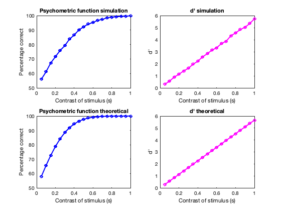
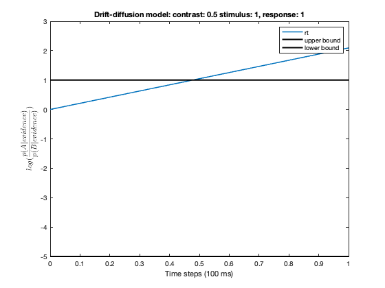

Contents
clear; close all; clc;
Q1a)
variable duration and constant contrast
stim_dur = 0.1: 0.1: 2;
trials_per_experiment = 10000;
contrast = 0.2;
var_dist = 1;
pA = 0.5;
percentage_correct_simul = zeros(size(stim_dur));
dprime_simul = zeros(size(stim_dur));
percentage_correct_theor = zeros(size(stim_dur));
dprime_theor = zeros(size(stim_dur));
crit = 'None';
for i = 1:length(stim_dur)
dur = stim_dur(i);
[optim_criterion, pcorr_simul, dp_simul, pcorr_theor, dp_theor] = ...
AFC_experiment(dur, contrast, var_dist,...
pA, trials_per_experiment, crit);
if i == 1
disp(['The optimum criterion is: ', num2str(optim_criterion)])
end
percentage_correct_simul(i) = pcorr_simul;
dprime_simul(i) = dp_simul;
percentage_correct_theor(i) = pcorr_theor;
dprime_theor(i) = dp_theor;
end
figure(1);
xlab = 'Duration of stimulus (s)';
plot_figs(stim_dur, percentage_correct_simul, dprime_simul, percentage_correct_theor, ...
dprime_theor, xlab)
The optimum criterion is: 0

constant duration and variable contrast
dur = 0.2;
stim_contrast = 0.05: 0.05: 1;
pA = 0.5;
percentage_correct_simul = zeros(size(stim_contrast));
dprime_simul = zeros(size(stim_contrast));
percentage_correct_theor = zeros(size(stim_contrast));
dprime_theor = zeros(size(stim_contrast));
for i = 1:length(stim_contrast)
contrast = stim_contrast(i);
[optim_criterion, pcorr_simul, dp_simul, pcorr_theor, dp_theor] = ...
AFC_experiment(dur, contrast, var_dist,...
pA, trials_per_experiment, crit);
if i == 1
disp(['The optimum criterion is: ', num2str(optim_criterion)])
end
percentage_correct_simul(i) = pcorr_simul;
dprime_simul(i) = dp_simul;
percentage_correct_theor(i) = pcorr_theor;
dprime_theor(i) = dp_theor;
end
figure(2);
xlab = 'Contrast of stimulus (s)';
plot_figs(stim_contrast, percentage_correct_simul, dprime_simul, percentage_correct_theor, ...
dprime_theor, xlab)
The optimum criterion is: 0

Q1b)
dur = 0.4;
trials_per_experiment = 100;
contrast = 0.1;
var_dist = 1;
pA = 0.75;
[optim_criterion, pcorr_simul, dp_simul, pcorr_theor, dp_theor] = ...
AFC_experiment(dur, contrast, var_dist,...
pA, trials_per_experiment, crit);
disp(['The optimum criterion is: ', num2str(optim_criterion)])
The optimum criterion is: 0
Q2
dur = 2;
trials_per_experiment = 100;
stim_contrast = [0.1 0.5];
var_dist = 1;
crit = 'None';
pA = 0.5;
lower_bounds = [-1, -5];
upper_bounds = [1, 5];
output = zeros(1, 7);
for contrast = stim_contrast
for lb = lower_bounds
for ub = upper_bounds
[optim_criterion, Hrate, FArate, rtime] = ...
RT_experiment(dur, contrast, var_dist,...
pA, trials_per_experiment, crit, lb, ub);
output = [output; contrast, lb, ub, Hrate, FArate, mean(rtime, 1), var(rtime, 1)];
end
end
end
output = output(2:end, :);
ColNames = {'Contrast', 'LowerBound', 'UpperBound', 'Hitrate', 'FArate', 'rtime_mean', 'rtime_var'};
T = table(output(:, 1), output(:, 2), output(:, 3), output(:, 4), ...
output(:, 5), output(:, 6), output(:, 7), 'VariableNames', ColNames);
disp(T)
function [optim_criterion, pcorr_simul, dp_simul, pcorr_theor, dp_theor] = ...
AFC_experiment(dur, contrast, var_dist, pA, t_length, crit)
Simulation
trials = rand(t_length, 1);
trials = (trials>(1-pA)) -1 * (trials<=(1-pA));
time_steps = dur * 10;
B_mean = -2 * time_steps * contrast;
A_mean = 2 * time_steps * contrast;
B_var = time_steps * var_dist;
A_var = time_steps * var_dist;
prior_odds = pA/(1-pA);
optim_criterion = (A_mean + B_mean) / 2;
if crit == 'None'
crit = optim_criterion;
end
evidence = time_steps * 2 * contrast * trials + ...
sqrt(A_var) * trials .* randn(t_length, 1);
response = (evidence > crit) -1 * (evidence <= crit);
H = 0; M = 0; CR = 0; FA = 0;
for i = 1:t_length
if trials(i) == 1
if response(i) == 1
H = H + 1;
else
M = M + 1;
end
else
if response(i) == -1
CR = CR + 1;
else
FA = FA + 1;
end
end
end
pcorr_simul = (H + CR) * 100/t_length;
Hrate = H/(H+M);
FArate = FA/(FA+CR);
if Hrate == 1
Hrate = 0.9999;
end
if FArate == 0
FArate = 0.0001;
end
zH = -sqrt(2) * erfcinv(2*Hrate);
zFA = -sqrt(2) * erfcinv(2*FArate);
dp_simul = zH - zFA;
Theoretical
resp_range = B_mean-3*B_var: 0.01: A_mean+3*A_var;
B_cdf = normcdf(resp_range, B_mean, sqrt(B_var));
A_pdf = normpdf(resp_range, A_mean, sqrt(A_var));
pcorr_theor = sum(A_pdf .* B_cdf);
dp_theor = (A_mean - B_mean)/sqrt(A_var);
end
function [optim_criterion, Hrate, FArate, rtime] = ...
RT_experiment(dur, contrast, var_dist, pA, t_length, crit, lb, ub)
trials = rand(t_length, 1);
trials = (trials>(1-pA)) -1 * (trials<=(1-pA));
response = zeros(t_length, 1);
rtime = zeros(t_length, 1);
Simulation
time_steps = dur * 10;
B_mean = -2 * time_steps * contrast;
A_mean = 2 * time_steps * contrast;
B_var = time_steps * var_dist;
A_var = time_steps * var_dist;
optim_criterion = (A_mean + B_mean) / 2;
if crit == 'None'
crit = optim_criterion;
end
log_priors = log(pA/(1-pA));
for trial_count = 1:t_length
trial = trials(trial_count);
log_posteriors = log_priors;
while (lb < log_posteriors(end)) & (log_posteriors(end) < ub)
evidence = 2 * contrast * trial + ...
trial * randn();
evidence_A = normpdf(evidence, A_mean, sqrt(A_var));
evidence_B = normpdf(evidence, B_mean, sqrt(B_var));
updated_posterior = log_posteriors(end) + ...
log(evidence_A/evidence_B);
log_posteriors = [log_posteriors, updated_posterior];
end
response(trial_count) = (log_posteriors(end) >= ub) -1 * (log_posteriors(end) <= ub);
rtime(trial_count) = length(log_posteriors) - 1;
if trial_count == 10
figure();
plot(1:rtime(trial_count) + 1, log_posteriors, 'DisplayName', 'rt')
hold on;
plot(xlim, [ub, ub], 'k', 'LineWidth', 2, 'DisplayName', 'upper bound')
plot(xlim, [lb, lb], 'k', 'LineWidth', 2, 'DisplayName', 'lower bound')
xlabel('Time steps (100 ms)')
ylabel('$$log(\frac{p(A|evidence)}{p(B|evidence)})$$', 'Interpreter', 'latex')
title(['Drift-diffusion model', 'stimulus: ', num2str(trials(trial_count)),...
', response: ', num2str(response(trial_count))])
legend()
end
end
H = 0; M = 0; CR = 0; FA = 0;
for i = 1:t_length
if trials(i) == 1
if response(i) == 1
H = H + 1;
else
M = M + 1;
end
else
if response(i) == -1
CR = CR + 1;
else
FA = FA + 1;
end
end
end
Hrate = H/(H+M);
FArate = FA/(FA+CR);



end
function plot_figs(x, y1, y2, y3, y4, xlab)
subplot(2, 2, 1)
plot(x, y1, 'b-o', 'LineWidth', 2, ...
'MarkerSize', 5)
xlabel(xlab)
ylabel('Percentage correct')
title('Psychometric function simulation')
subplot(2, 2,2)
plot(x, y2, 'm-o', 'LineWidth', 2, ...
'MarkerSize', 5);
xlabel(xlab)
ylabel("d'")
title("d' simulation")
subplot(2, 2, 3)
plot(x, y3, 'b-o', 'LineWidth', 2, ...
'MarkerSize', 5)
xlabel(xlab)
ylabel('Percentage correct')
title('Psychometric function theoretical')
subplot(2, 2, 4)
plot(x, y4, 'm-o', 'LineWidth', 2, ...
'MarkerSize', 5);
xlabel(xlab)
ylabel("d'")
title("d' theoretical")
end
Contrast LowerBound UpperBound Hitrate FArate rtime_mean rtime_var
________ __________ __________ _______ ________ __________ _________
0.1 -1 1 0.73585 0.14894 8.75 45.347
0.1 -1 5 0.68 0 28.68 870.86
0.1 -5 1 1 0.33962 30.44 914.45
0.1 -5 5 1 0 66.81 1514.3
0.5 -1 1 0.91111 0.090909 1.31 0.3939
0.5 -1 5 0.96226 0 2.41 2.7819
0.5 -5 1 0.98387 0.10526 2.23 2.0771
0.5 -5 5 1 0 3.34 2.9044